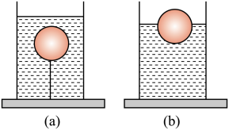
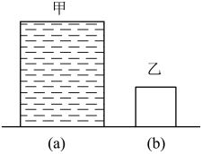
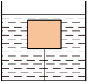
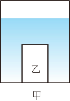
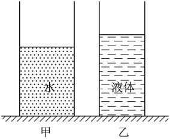
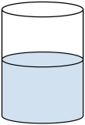
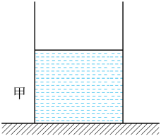
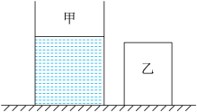

浮力概念 · 阿基米德原理 · 物体的浮沉条件 · 浮力的应用
浸在液体（或气体）中的物体受到液体（或气体）对它 向上托的力，这个力叫做 浮力。一切浸入液体中的物体都受到浮力。
浸在液体中的物体受到向上的浮力，浮力的大小 等于它排开的液体所受的重力。
| 情况 | $V_{\text{排}}$ | 浮力 |
|---|---|---|
| 部分浸入（漂浮） | $V_{\text{排}} < V_{\text{物}}$ | $F_{\text{浮}} = \rho_{\text{液}} g V_{\text{排}}$ |
| 完全浸没 | $V_{\text{排}} = V_{\text{物}}$ | $F_{\text{浮}} = \rho_{\text{液}} g V_{\text{物}}$ |
物体的浮沉取决于它受到的 浮力 $F_{\text{浮}}$ 与 重力 $G$ 的大小关系（完全浸没时 $V_{\text{排}}=V_{\text{物}}$）。
| 状态 | 受力关系 | 密度关系（$\rho_{\text{物}}$ 与 $\rho_{\text{液}}$） | 最终位置 |
|---|---|---|---|
| 上浮 | $F_{\text{浮}} > G$ | $\rho_{\text{物}} < \rho_{\text{液}}$ | 最终漂浮 |
| 漂浮 | $F_{\text{浮}} = G$ | $\rho_{\text{物}} < \rho_{\text{液}}$ | 部分露出液面 |
| 悬浮 | $F_{\text{浮}} = G$ | $\rho_{\text{物}} = \rho_{\text{液}}$ | 可停在液体任意深度 |
| 下沉 | $F_{\text{浮}} < G$ | $\rho_{\text{物}} > \rho_{\text{液}}$ | 沉到容器底部 |
先用弹簧测力计测出物体在空气中的重力 $G$，再测出物体浸在液体中时弹簧测力计的示数 $F'$，两者之差即为浮力。
当物体漂浮或悬浮时，浮力与重力平衡：
用密度大于水的钢铁制造，采用 空心 的办法增大可利用的浮力，使 $F_{\text{浮}} = G$ 而漂浮。轮船的 排水量 指满载时排开水的质量。
通过 向水舱充水或排水 改变自身重力：充水时重力增大，下沉；排水时重力减小，上浮。潜水艇浸没时浮力不变，靠改变 重力 实现浮沉。
充入密度 小于空气 的气体（如氦气、热空气），使 $F_{\text{浮}} > G$ 而上升。靠改变 自身体积（排开空气的体积） 调节升降。
用来测量液体密度，在液体中 漂浮，满足 $F_{\text{浮}} = G_{\text{计}}$（浮力不变）。液体密度越大，密度计露出液面部分越 多（刻度上疏下密）。
1．（2025·上海静安·二模）水中的乒乓球在细线剪断前后，均能处于静止状态，如图（a）（b）所示。与图（a）相比，则乒乓球在图（b）中所受的（ ）

AB．图示（a）中，乒乓球浸没水中，排开水的体积等于自身的体积；图（b）中乒乓球漂浮水中，排开水的体积小于自身体积，即（a）中乒乓球排开水的体积比（b）中的大。据阿基米德原理 $F_{\text{浮}} = \rho_{\text{液}} g V_{\text{排}}$ 知，与（a）相比，在图（b）中乒乓球所受的浮力变小，故 A、B 不符合题意。
CD．两图中，乒乓球都处于静止，所受的力都是平衡力，合力都为零，所以合力一定不变，故 C 不符合题意，D 符合题意。
故选 D。
2．（2025·上海崇明·二模）如图所示，图（a）是一个装满酒精的薄壁圆柱形容器甲，图（b）是一个正方体物块乙。将重为 $G_{\text{乙}}$ 的物块乙轻放入容器甲中，溢出的酒精重为 $G_{\text{溢酒精}}$，且存在 $G_{\text{乙}} > G_{\text{溢酒精}}$。（$\rho_{\text{酒精}} = 0.8 \times 10^3\ \text{kg/m}^3$）

问：
（1）乙物块为正方体，体积为 $V_{\text{乙}} = h^3$。
密度为 $\rho_{\text{乙}} = \dfrac{m_{\text{乙}}}{V_{\text{乙}}} = \dfrac{G_{\text{乙}}}{h^3 g}$。
（2）酒精对容器底部的压强：
$p_{\text{酒精}} = \rho_{\text{酒精}}\,g\,h = 0.8 \times 10^3\ \text{kg/m}^3 \times 9.8\ \text{N/kg} \times 0.2\ \text{m} = 1568\ \text{Pa}$。
（3）对乙在水中浮沉情况逐项讨论：
① 漂浮：$G_{\text{溢水}} = G_{\text{排水}} = F_{\text{浮}} = G_{\text{乙}}$；
② 悬浮：$G_{\text{溢水}} = G_{\text{排水}} = F_{\text{浮}} = G_{\text{乙}}$；
③ 沉底：$G_{\text{溢水}} = G_{\text{排水}} = F_{\text{浮}} < G_{\text{乙}}$。
因为 $G_{\text{乙}} > G_{\text{溢酒精}}$，乙在酒精中 沉底，所以 $V_{\text{排水}} = V_{\text{排酒精}}$。
又 $\rho_{\text{水}} > \rho_{\text{酒精}}$，由 $m = \rho V$ 可得 $m_{\text{排水}} > m_{\text{排酒精}}$，
因此 $G_{\text{排水}} > G_{\text{排酒精}} = G_{\text{溢酒精}}$。
综上：$G_{\text{溢酒精}} < G_{\text{溢水}} < G_{\text{乙}}$。
3．（23-24 九年级下·广西桂林·阶段检测）如图所示，有一密度为 $0.5 \times 10^3\ \text{kg/m}^3$、体积为 $1000\ \text{cm}^3$ 的正方体木块，用一条细绳将木块浸没水中。细绳质量和体积可忽略不计，容器底面积为 $100\ \text{cm}^2$。剪断绳子，木块静止，水面________（选填"上升""不变"或"下降"），水对容器底部的压强变化了________$\text{Pa}$。

【分析】根据阿基米德原理和浮沉条件计算浮力、排开液体的体积、判断液面变化；再根据液体压强公式求压强变化量。
[1] 水面变化：由于木块密度 $\rho_{\text{木}} = 0.5 \times 10^3\ \text{kg/m}^3$ 小于水的密度，剪断绳子后木块会上浮，最终 漂浮 在水面。漂浮时木块排开水的体积 $V_{\text{排}}$ 小于原来浸没时的 $V_{\text{排}} = V_{\text{木}}$，因此水面 下降。
[2] 压强变化：
① 木块体积 $V = 1000\ \text{cm}^3 = 1 \times 10^{-3}\ \text{m}^3$
② 木块质量 $m = \rho_{\text{木}} V = 0.5 \times 10^3\ \text{kg/m}^3 \times 1 \times 10^{-3}\ \text{m}^3 = 0.5\ \text{kg}$
③ 木块重力 $G = mg = 0.5\ \text{kg} \times 10\ \text{N/kg} = 5\ \text{N}$
④ 木块漂浮时浮力等于重力：$F_{\text{浮}} = G = 5\ \text{N}$
⑤ 由阿基米德原理得漂浮时排开水的体积： $V_{\text{排}} = \dfrac{F_{\text{浮}}}{\rho_{\text{水}} g} = \dfrac{5\ \text{N}}{1 \times 10^3\ \text{kg/m}^3 \times 10\ \text{N/kg}} = 5 \times 10^{-4}\ \text{m}^3$
⑥ 排开水的体积变化量：$\Delta V_{\text{排}} = V - V_{\text{排}} = 1 \times 10^{-3}\ \text{m}^3 - 5 \times 10^{-4}\ \text{m}^3 = 5 \times 10^{-4}\ \text{m}^3 = 500\ \text{cm}^3$
⑦ 水面下降高度：$\Delta h = \dfrac{\Delta V_{\text{排}}}{S} = \dfrac{500\ \text{cm}^3}{100\ \text{cm}^2} = 5\ \text{cm} = 0.05\ \text{m}$
⑧ 水对容器底压强变化量： $\Delta p = \rho_{\text{水}} g \Delta h = 1 \times 10^3\ \text{kg/m}^3 \times 10\ \text{N/kg} \times 0.05\ \text{m} = 500\ \text{Pa}$
故答案为：水面 下降，水对容器底部压强变化了 500 Pa。
4．（2025·上海闵行·二模）如图所示，盛有水的轻质薄壁圆柱形容器甲置于水平地面上，容器底面积为 $4 \times 10^{-2}\ \text{m}^2$，其内部中央放有一个圆柱形物体乙。现分三次从容器中抽水，每次抽水后容器底受到水的压强 $p_{\text{水}}$ 及容器对地面的压强 $p_{\text{容}}$ 如表 2 所示。

表 2 分次抽水时的压强数据
| 序号 | 1（未抽水） | 2（第一次） | 3（第二次） | 4（第三次） |
|---|---|---|---|---|
| 容器底受到水的压强 $p_{\text{水}}/\text{Pa}$ | 2500 | 2100 | 1700 | 1300 |
| 容器对地面的压强 $p_{\text{容}}/\text{Pa}$ | 3100 | 2700 | 2375 | 2075 |
问：
（1）未抽水时容器对地面压强 $p_{\text{容}} = 3100\ \text{Pa}$，由 $p = \dfrac{F}{S}$ 得： $$F_{\text{容}} = p_{\text{容}}\,S_{\text{容}} = 3100\ \text{Pa} \times 4 \times 10^{-2}\ \text{m}^2 = 124\ \text{N}$$
（2）由表格数据，每次抽出水后容器底受到水的压强变化量相等：
$$\Delta p = 2500 - 2100 = 2100 - 1700 = 1700 - 1300 = 400\ \text{Pa}$$
由 $\Delta p = \rho_{\text{水}} g \Delta h$ 知，每次抽出水的 深度相同，故 小王正确。
由于圆柱形物体乙浸没在水中，每次抽水时，乙会占据相同的体积，所以 抽出水的体积不相等，即抽出水的 质量也不相等，故 小红错误。
（3a）分析表格中压强变化：
第一次抽水后：$p_{\text{水}}$ 减少 $400\ \text{Pa}$，$p_{\text{容}}$ 减少 $3100 - 2700 = 400\ \text{Pa}$，两者相等——说明乙仍完全浸没（乙上浮尚未发生）。
第二次抽水后：$p_{\text{水}}$ 减少 $400\ \text{Pa}$，$p_{\text{容}}$ 减少 $2700 - 2375 = 325\ \text{Pa}$，不再相等——说明此时乙上表面开始露出水面（乙受力变化）。
故第 二 次抽水后乙上表面开始露出水面。
（3b）求甲、乙底面积之比：
① 由第二次、第三次数据得每次水位下降 $\Delta h$：
$h_2 = \dfrac{p_2}{\rho_{\text{水}} g} = \dfrac{1700}{1 \times 10^3 \times 10} = 0.17\ \text{m}$
$h_3 = \dfrac{1700 - 400}{1 \times 10^3 \times 10} = 0.13\ \text{m}$
故 $\Delta h = 0.04\ \text{m}$。
② 第二次抽水后，容器对地面的压力减少量等于抽出水的重力：
$\Delta F = \Delta G_{\text{水}} = \rho_{\text{水}} g \Delta h \cdot (S_{\text{甲}} - S_{\text{乙}}) = (p_{\text{容}2} - p_{\text{容}3})\,S_{\text{甲}}$
$2700 - 2375 = 325\ \text{Pa}$，代入 $S_{\text{甲}} = 4 \times 10^{-2}\ \text{m}^2$：
$\Delta F = 325 \times 4 \times 10^{-2} = 13\ \text{N}$
③ 解得 $S_{\text{乙}}$：
$S_{\text{甲}} - S_{\text{乙}} = \dfrac{\Delta F}{\rho_{\text{水}} g \Delta h} = \dfrac{13}{1 \times 10^3 \times 10 \times 0.04} = 0.03\ \text{m}^2$
$S_{\text{乙}} = 0.04 - 0.03 = 0.01\ \text{m}^2 = 1 \times 10^{-2}\ \text{m}^2$
故 $S_{\text{甲}} : S_{\text{乙}} = 4 \times 10^{-2} : 1 \times 10^{-2} = \mathbf{4 : 1}$。
5．（2025·上海黄浦·二模）如图所示，甲、乙两个轻质薄壁圆柱形容器放置在水平面上（容器足够高）。两容器底面积之比为 $5:3$，甲容器中装有 $5\ \text{kg}$ 的水，乙容器中装有某种液体。

问：
| 物体所处状态 | 浸没在水中 | 漂浮在乙液面上 |
|---|---|---|
| 液体对容器底部压强增加量 $\Delta p/\text{Pa}$ | 980 | 1960 |
（1）水的体积： $$V_{\text{水}} = \dfrac{m_{\text{水}}}{\rho_{\text{水}}} = \dfrac{5\ \text{kg}}{1.0 \times 10^3\ \text{kg/m}^3} = 5 \times 10^{-3}\ \text{m}^3$$
（2）甲容器对水平面的压强：
轻质薄壁容器（自身重力不计），故容器对水平面的压力等于水的重力： $$F_{\text{甲}} = G_{\text{水}} = m_{\text{水}}\, g = 5\ \text{kg} \times 9.8\ \text{N/kg} = 49\ \text{N}$$ $$p_{\text{甲}} = \dfrac{F_{\text{甲}}}{S_{\text{甲}}} = \dfrac{49\ \text{N}}{5 \times 10^{-3}\ \text{m}^2} = 9800\ \text{Pa}$$
（3）物体的密度：
① 由浸没在水中求物体体积：
物体浸没时容器底压强增加 $\Delta p_{\text{水}} = 980\ \text{Pa}$，由 $\Delta p = \rho_{\text{水}}\,g\,\Delta h$ 得水深增加量：
$$\Delta h_{\text{水}} = \dfrac{\Delta p_{\text{水}}}{\rho_{\text{水}}\,g} = \dfrac{980\ \text{Pa}}{1.0 \times 10^3\ \text{kg/m}^3 \times 9.8\ \text{N/kg}} = 0.1\ \text{m}$$
浸没时 $V_{\text{物}} = V_{\text{排}} = S_{\text{甲}}\,\Delta h = 5 \times 10^{-3}\ \text{m}^2 \times 0.1\ \text{m} = 5 \times 10^{-4}\ \text{m}^3$。
② 利用乙中漂浮条件求密度：
物体在乙中漂浮：$F_{\text{浮}} = G_{\text{物}}$，即 $\rho_{\text{乙}}\,g\,V_{\text{排乙}} = \rho_{\text{物}}\,g\,V_{\text{物}}$。
乙容器底面积 $S_{\text{乙}} = \dfrac{3}{5} S_{\text{甲}} = \dfrac{3}{5} \times 5 \times 10^{-3} = 3 \times 10^{-3}\ \text{m}^2$。
漂浮时 $V_{\text{排乙}} = \dfrac{G_{\text{物}}}{\rho_{\text{乙}}\,g} = \dfrac{\rho_{\text{物}}\,V_{\text{物}}}{\rho_{\text{乙}}}$，
所以乙中液面升高 $\Delta h_{\text{乙}} = \dfrac{V_{\text{排乙}}}{S_{\text{乙}}} = \dfrac{\rho_{\text{物}}\,V_{\text{物}}}{\rho_{\text{乙}}\,S_{\text{乙}}}$。
对乙容器底部压强增加量：
$$\Delta p_{\text{乙}} = \rho_{\text{乙}}\,g\,\Delta h_{\text{乙}} = \rho_{\text{乙}}\,g \cdot \dfrac{\rho_{\text{物}}\,V_{\text{物}}}{\rho_{\text{乙}}\,S_{\text{乙}}} = \dfrac{\rho_{\text{物}}\,g\,V_{\text{物}}}{S_{\text{乙}}}$$
代入数据：
$$1960\ \text{Pa} = \dfrac{\rho_{\text{物}} \times 9.8\ \text{N/kg} \times 5 \times 10^{-4}\ \text{m}^3}{3 \times 10^{-3}\ \text{m}^2}$$
解得：
$$\rho_{\text{物}} = \dfrac{1960 \times 3 \times 10^{-3}}{9.8 \times 5 \times 10^{-4}} = \mathbf{1.2 \times 10^3\ \text{kg/m}^3}$$
故答案为：(1) $5 \times 10^{-3}\ \text{m}^3$；(2) 9800 Pa；(3) $1.2 \times 10^3\ \text{kg/m}^3$。
6．（2025·上海嘉定·二模）如图所示，轻质薄壁圆柱形容器置于水平地面，其底面积为 $4S$，高度为 $2H$，内部盛有深度为 $H$ 的水。
| 圆柱体 | 密度 | 底面积 | 高度 |
|---|---|---|---|
| A | $1.5\,\rho_{\text{水}}$ | $3S$ | $2H$ |
| B | $4\,\rho_{\text{水}}$ | $2S$ | $H$ |

问：
（1）① 水的体积： $$V_{\text{水}} = \dfrac{m_{\text{水}}}{\rho_{\text{水}}} = \dfrac{10\ \text{kg}}{1.0 \times 10^3\ \text{kg/m}^3} = 1 \times 10^{-2}\ \text{m}^3$$
（1）② 水对容器底的压强： $$p_{\text{水}} = \rho_{\text{水}}\,g\,h_{\text{水}} = 1.0 \times 10^3\ \text{kg/m}^3 \times 9.8\ \text{N/kg} \times 0.2\ \text{m} = 1960\ \text{Pa}$$
（2）判断放入 A 还是 B：
放 A 后：A 高度为 $2H$。若 A 浸没，所需水深 $h_{\text{水}A}' = \dfrac{V_{\text{水}}}{S_{\text{容}} - S_A} = \dfrac{4SH}{4S - 3S} = 4H > 2H$（超过容器高度），水会溢出，最终水深为 $2H$。
溢出水的体积：
$$V_{\text{溢}} = S \times (4H - 2H) = 2SH$$
地面所受压力变化量（容器轻，可忽略）＝ A 重 − 溢出水重：
$$\Delta F_A = G_A - G_{\text{溢}} = (1.5\,\rho_{\text{水}})(3S)(2H)\,g - \rho_{\text{水}}(2SH)\,g = (9 - 2)\,\rho_{\text{水}}SH\,g = 7\,\rho_{\text{水}}SH\,g$$
放 B 后：B 高度 $H$。B 浸没后水面升高
$$\Delta h = \dfrac{S_B \cdot H}{S_{\text{容}} - S_B} = \dfrac{2S \cdot H}{4S - 2S} = H$$
水深变为 $H + H = 2H$（恰好达到容器顶部，未溢出）。
地面所受压力变化量：
$$\Delta F_B = G_B - G_{\text{溢}} = (4\,\rho_{\text{水}})(2S)(H)\,g - 0 = 8\,\rho_{\text{水}}SH\,g$$
比较：$\Delta F_A = 7\,\rho_{\text{水}}SH\,g < \Delta F_B = 8\,\rho_{\text{水}}SH\,g$。
受力面积均为 $S_{\text{容}} = 4S$ 相同，所以压强变化量 $\Delta p$ 与压力变化量 $\Delta F$ 成正比。
因此选 A，地面所受压强变化量最小：
$$\Delta p_{\min} = \dfrac{\Delta F_A}{S_{\text{容}}} = \dfrac{7\,\rho_{\text{水}}SH\,g}{4S} = \mathbf{1.75\,\rho_{\text{水}}H\,g}$$
故答案为：(1)① $1 \times 10^{-2}\ \text{m}^3$；② 1960 Pa (2) 应选 A，$\Delta p_{\min} = 1.75\,\rho_{\text{水}}\,H\,g$。
7．（2025·上海金山·二模）如图所示，薄壁圆柱形容器甲置于水平地面上，容器足够高，底面积为 $2 \times 10^{-2}\ \text{m}^2$，其内部盛有 $0.15\ \text{m}$ 深的水；柱体乙的密度为 $2 \times 10^3\ \text{kg/m}^3$，体积为 $1 \times 10^{-3}\ \text{m}^3$。

问：
（1）水对容器底部的压强： $$p_{\text{水}} = \rho_{\text{水}}\,g\,h = 1.0 \times 10^3\ \text{kg/m}^3 \times 10\ \text{N/kg} \times 0.15\ \text{m} = 1500\ \text{Pa}$$ （注：金山二模中重力加速度取 $g = 10\ \text{N/kg}$。）
（2）(a) 柱体乙的质量： $$m_{\text{乙}} = \rho_{\text{乙}}\,V_{\text{乙}} = 2 \times 10^3\ \text{kg/m}^3 \times 1 \times 10^{-3}\ \text{m}^3 = 2\ \text{kg}$$
（2）(b) 柱体乙底面积最小值：
容器中原有水的体积：
$$V_{\text{水}} = S_{\text{容}}\,h_{\text{水}} = 2 \times 10^{-2}\ \text{m}^2 \times 0.15\ \text{m} = 3 \times 10^{-3}\ \text{m}^3$$
因为 $\rho_{\text{乙}} = 2 \times 10^3\ \text{kg/m}^3 > \rho_{\text{水}}$，柱体乙放入水中后会沉底。
由 $\Delta p_{\text{水}} = \rho_{\text{水}}\,g\,\Delta h$ 可知，要使 $\Delta p_{\text{水}}$ 最大，应使水深增加量 $\Delta h$ 最大，即柱体乙刚好完全浸没在水中（再细高一些就会露出水面，浸没部分减少）。
当柱体乙刚好浸没时，水的总体积 $= V_{\text{水}} + V_{\text{乙}}$，水深 $h' = \dfrac{V_{\text{水}} + V_{\text{乙}}}{S_{\text{容}}}$： $$h' = \dfrac{3 \times 10^{-3}\ \text{m}^3 + 1 \times 10^{-3}\ \text{m}^3}{2 \times 10^{-2}\ \text{m}^2} = 0.2\ \text{m}$$ 此时柱体乙的高度 $h_{\text{乙}} = h' = 0.2\ \text{m}$。
由 $V_{\text{乙}} = S_{\text{乙}}\,h_{\text{乙}}$ 得柱体乙底面积的最小值： $$S_{\text{乙}} = \dfrac{V_{\text{乙}}}{h_{\text{乙}}} = \dfrac{1 \times 10^{-3}\ \text{m}^3}{0.2\ \text{m}} = 0.005\ \text{m}^2$$ （$S_{\text{乙}}$ 越小，柱体越"细高"，越易达到完全浸没；$S_{\text{乙}} = 0.005\ \text{m}^2$ 正好对应"刚好浸没"的临界状态。）
故答案为：(1) 1500 Pa (2) (a) $2\ \text{kg}$ (b) $S_{\text{乙}} = 0.005\ \text{m}^2$。
8．（2025·上海奉贤·二模）如图所示，盛有水的轻质薄壁柱形容器甲和实心均匀柱体乙置于水平地面上，容器甲、柱体乙的底面积之比是 $2:1$，容器甲足够高。

问：
（1）水的体积： $$V_{\text{水}} = \dfrac{m_{\text{水}}}{\rho_{\text{水}}} = \dfrac{3\ \text{kg}}{1.0 \times 10^3\ \text{kg/m}^3} = 3 \times 10^{-3}\ \text{m}^3$$
（2）水对容器底部的压强： $$p_{\text{水}} = \rho_{\text{水}}\,g\,h_{\text{水}} = 1.0 \times 10^3\ \text{kg/m}^3 \times 9.8\ \text{N/kg} \times 0.2\ \text{m} = 1960\ \text{Pa}$$
（3）柱体乙的密度：
设 $S_{\text{乙}} = S$，则 $S_{\text{甲}} = 2S$。
乙浸没在甲中，$V_{\text{乙}} = V_{\text{排}}$。水位升高 $\Delta h = 0.05\ \text{m}$，由 $V_{\text{排}} = S_{\text{甲}}\,\Delta h$ 得：
$$V_{\text{乙}} = S_{\text{甲}}\,\Delta h = 2S \times 0.05\ \text{m} = 0.1\,S\ \text{m}^3$$
乙的体积又等于 $V_{\text{乙}} = S_{\text{乙}}\,h_{\text{乙}} = S\,h_{\text{乙}}$，故：
$$h_{\text{乙}} = 0.1\ \text{m}$$
实心柱体放在水平面上，$p_{\text{乙}} = \dfrac{F}{S} = \dfrac{G}{S} = \dfrac{\rho_{\text{乙}}\,V_{\text{乙}}\,g}{S_{\text{乙}}} = \rho_{\text{乙}}\,g\,h_{\text{乙}}$，所以： $$\rho_{\text{乙}} = \dfrac{p_{\text{乙}}}{g\,h_{\text{乙}}} = \dfrac{1960\ \text{Pa}}{9.8\ \text{N/kg} \times 0.1\ \text{m}} = 2 \times 10^3\ \text{kg/m}^3$$
故答案为：(1) $3 \times 10^{-3}\ \text{m}^3$ (2) 1960 Pa (3) $\rho_{\text{乙}} = 2 \times 10^3\ \text{kg/m}^3$。